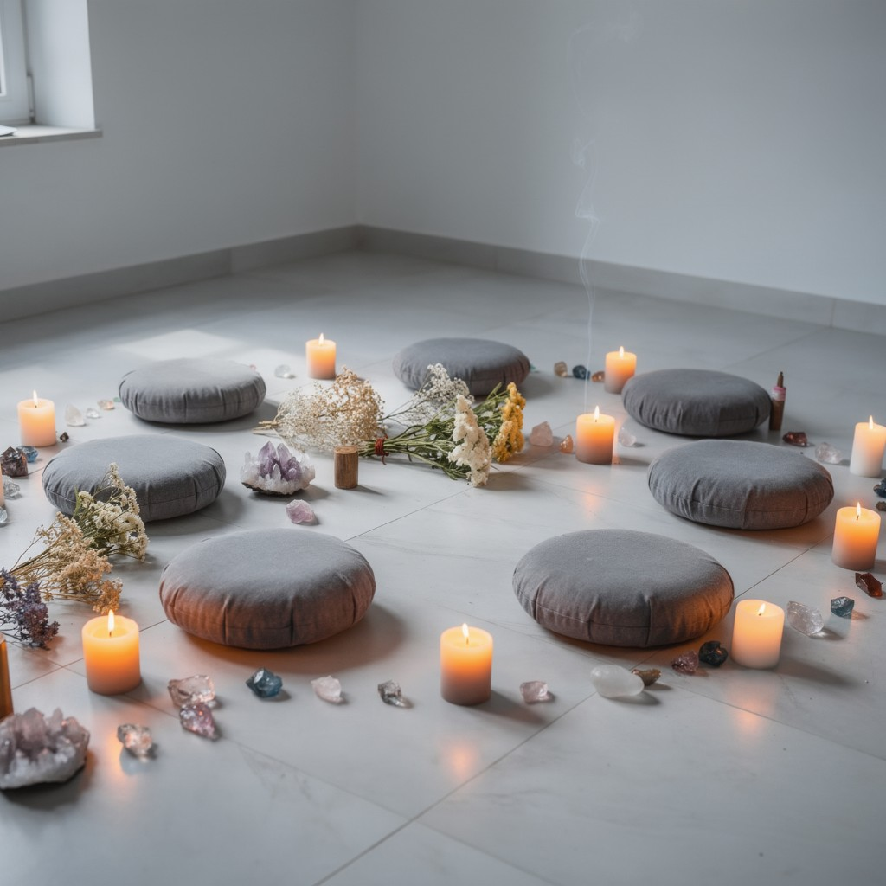

Meditation
Stillness, breath, and awareness — tools to settle the mind and meet the present moment with clarity.

How to Start a Mindful Practice
-
Set an Intention –
Begin each session with a clear purpose, whether it's relaxation, gratitude, or self-awareness.
-
Focus on Breath –
Use deep, conscious breathing to anchor yourself in the present moment.
-
Start Small –
Even 5–10 minutes of mindful movement or meditation can create a lasting habit.
-
Observe Without Judgment –
Notice sensations, thoughts, and emotions without labeling them as 'good' or 'bad.'
-
Incorporate Mindful Transitions –
Move slowly between poses, paying attention to alignment and breath.
-
End with Gratitude –
Close your practice by acknowledging your effort and the benefits it brings.